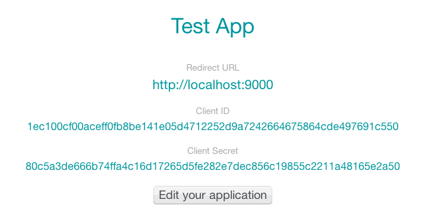
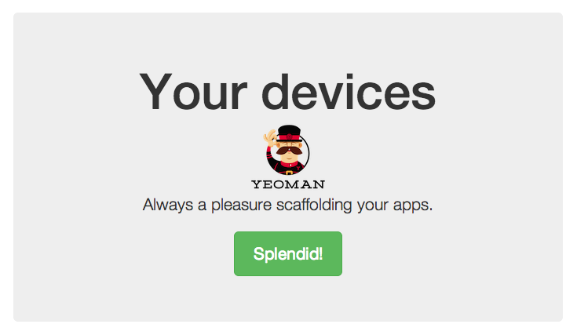

Introduction
Build web apps for the Connected Home using the power of AngularJS and Lelylan, a new platform to monitor and control any devices through a simple and robust REST API.
Build web apps for the Connected Home using the power of AngularJS and Lelylan, a new platform to monitor and control any devices through a simple and robust REST API.
Install lelylan-ng using Bower.
$ bower install lelylan-ng --saveThe code above lets you get your devices. To fully understand what's going on read the detailed tutorial section.
<html ng-app="example">
<body>
<!-- OAuth2 directive -->
<oauth2
site="http://people.lelylan.com"
client-id="<client-id>"
redirect-uri="http://redirect.example.com"
scope="devices"
profile="http://api.lelylan.com/me">
</oauth2>
<!-- Show the owned devices -->
<div ng-controller="ExampleController">
<div ng-repeat="device in devices">{{device.name}}</div>
</div>
<!-- Gets the owned device -->
<script>
function ExampleController($scope, Device) {
Device.query().success(function(data) { $scope.devices = data });
}
</script>
<script>
angular.module('example', ['lelylan.client']);
</script>
</body>
</html> In this tutorial we describe step by step how to create a web app that lets you show the status of your devices.
To build our app we'll use Yeoman, a collection of tools and frameworks that can help developers quickly build web applications.
With a recent version of Node.js installed, install the yo package.
In this way you have Yo, Grunt and Bower and can run them directly from the command-line.
$ npm install -g yoWith Yeoman you can install additional generators with npm. For this tutorial you need to install the AngularJS generator.
$ npm install -g generator-angularTo begin, go to the terminal, make a new directory and cd into it.
$ mkdir new-project && cd $_You can now kick-start your AngularJS app.
$ yo angularIt will also ask you if you would like to include Twitter Bootstrap and other stuff. Once you've decided, just hit Enter. It will take a while to complete.
To preview what the app looks like run the serve command.
$ grunt serveThe server supports LiveReload, meaning you can fire up a text editor, edit a custom element and the browser will reload on save.
Install lelylan-ng using Bower.
$ bower install lelylan-ng --save
With this command lelylan-ng and all its dependencies are downloaded. To automatically
add them to the index.html page stop and restart the server.
$ grunt serveThe setup is now completed.
Add the Lelylan client to your AngularJS app.
// app/scripts/app.js
angular.module('newProjectApp', ['lelylan.client'])
... This lets you access to all the directives and the services defined in lelylan-ng and its dependencies.
Lelylan API uses the OAuth 2.0 protocol for authentication and authorization. OAuth lets users grant the access to the desired resources to third party applications, giving them the possibility to enable and disable those accesses whenever they want.
You need to register your applications before getting started. A registered OAuth application is assigned with a unique Client ID and a Redirect URI needed to make the authorization flow work. You will need them soon.

To get the authorization token you need to use
oauth-ng, an
AngularJS directive for the OAuth2 Implicit Flow. What it does is quite simple.
It shows you a Login link pointing to the authorization page for
your application and save the access token once you authorize the application.
Open the main.html view and set the oauth directive replacing the the
client-id and the redirect-uri with your application ones.
// apps/views/main.html
...
<oauth2
site="http://people.lelylan.com"
client-id="<client-id>"
redirect-uri="<redirect-uri>"
scope="devices"
profile="http://api.lelylan.com/me">
</oauth2>
... The oauth component accepts the following attributes.
A device is everything you interact with everyday of your life. You interact with lights, alarms, cooling and heating systems, smoke and gas sensors, appliances, rolling shutters and windows, irrigations, video surveillance, gates, multimedia (audio and video) and much more. The Devices API defines a set of services to monitor, control, simulate and connect everything.
To get all your devices you need to use the Device#all method. Open the
main controller and replace the existing code with the following.
// apps/scripts/controllers/main.js
angular.module('newProjectApp')
.controller('MainCtrl', function ($scope, Device) {
Device.all()
.success(function(data) { $scope.devices = data })
.error(function(data) { $scope.error = 'Unauthorized request. Login first.' })
});
This is what happens. You inject the Device service and use the
Device.all() method to get all of your devices. The request returns
a promise with two $http specific methods.
$scope.devices.$scope.error.
Open the main.html view and list your devices using
$scope.devices.
// apps/views/main.html
<div ng-if="devices" ng-repeat="device in devices">{{device.name}}<div>
<div ng-if="error">{{error}}</div> What you are doing here is a loop between all devices to show their names or the visualization of an error message whenever you are not logged in and the request to get the devices fails. Here the final result.
All methods are fully descibed in the Dev Center.
Every request returns a
promise
with two $http specific methods: success and error.
Device.all().
success(function(data, status, headers, config) {
// this callback will be called asynchronously
// when the response is available
}).
error(function(data, status, headers, config) {
// called asynchronously if an error occurs
// or server returns response with an error status.
}); When using the subscription service you first need to set the client credentials
Subscription.auth({ clientId: '<client-id>', clientSecret: '<client-secret>' });
Subscription.all().success(function(data) { scope.subscriptions = data }) In this case no access token required.
When a user logs in with the oauth-ng directive the current user is accessible through the Profile service.
Profile.get().success(function(data) { scope.profile = data }); Lelylan client accepts the following options.
endpoint - A string representing the API endpoint
(http://api.lelylan.com by default).Here a simple example.
angular.module('example', ['lelylan.client']);
.value('lelylan.client.config', { endpoint: 'http:///localhost\\:9000' });